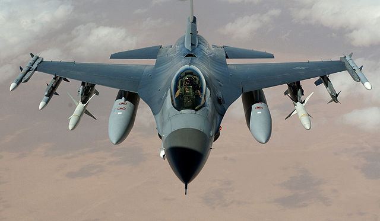

F-16Viper

The F-16 Viper is a multi role aircraft. Made in 1957 the F-16 Eagle is still one of the most feared aircraft today. The F-16 Viper is iconic for it being one of the most cheapest carcraft to maintain. The F-16 Viper use its Aim 9 air to air missiles that can reach up to 18 km. The F-16 VIper is responsible for shooting down 76 air to air kills. The F-16 Viper has a max speed of mach 2. The A-16 Viper is still in service
Back